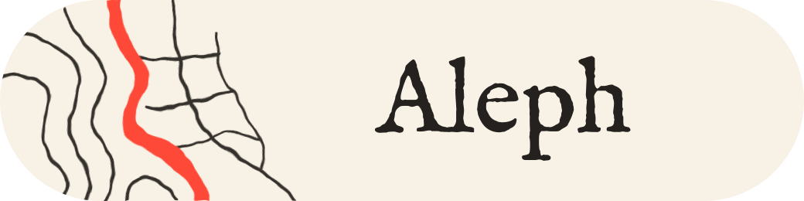
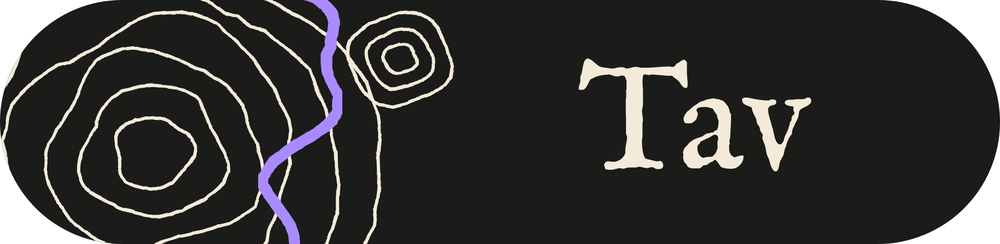

Download a piece of a planet
for you (or your LLM)

Draw a box anywhere on Earth and Aleph downloads everything inside it: buildings, elevation, satellite imagery, Street View photos and textured 3D models.

Draw a box anywhere on the Moon and Tav downloads everything inside it: imagery, elevation, a textured 3D mesh, night temperature, gravity, radar, caves, minerals and on-site photos.